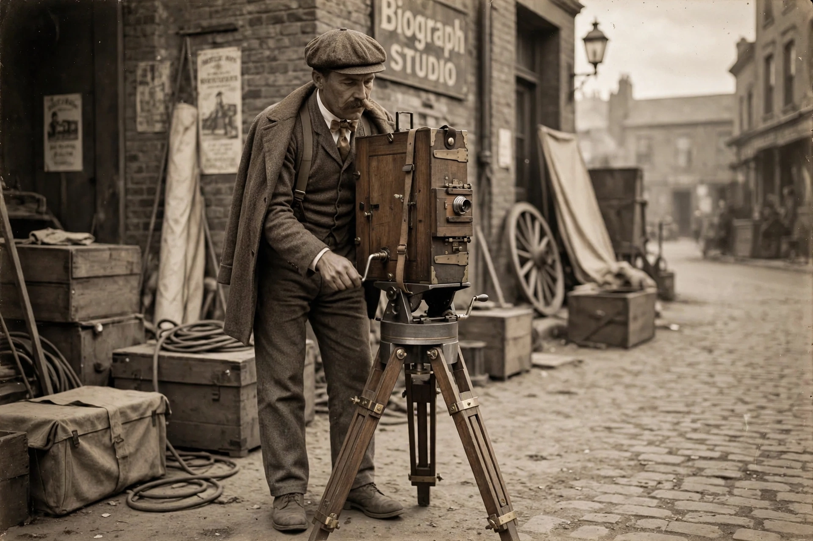

| Billy Bitzer | |
| Born | April 21, 1872, Roxbury, Massachusetts, U.S. |
|---|---|
| Died | April 29, 1944 (aged 72), Los Angeles, California, U.S. |
| Occupation | Cinematographer |
| Years active | 1896–1929 |

Gottfried Wilhelm "Billy" Bitzer (April 21, 1872 – April 29, 1944) was an American cinematographer and pioneer of motion picture technology. Working principally with director D. W. Griffith at the American Mutoscope and Biograph Company, Bitzer helped develop many of the foundational techniques of film photography, including the close-up, soft-focus photography, backlighting, and the fade-out.
Bitzer began his career in 1894 as an electrician and projectionist, joining the American Mutoscope Company, which became Biograph. By the late 1890s he was photographing actualities, including William McKinley's activities and the Jeffries–Sharkey fight of 1899. When D. W. Griffith began directing at Biograph in 1908, Bitzer became his exclusive cameraman, a partnership that lasted through Griffith's independent epics.
Together they refined the grammar of narrative cinema on films including The Birth of a Nation (1915) and Intolerance (1916), on which Bitzer executed complicated camera movements — including a celebrated crane shot descending into the Babylonian set — matte photography, and dramatic night lighting. Bitzer is credited with early use of artificial lighting effects, the iris shot, and shooting at dawn and dusk for atmospheric effect.
Bitzer's career declined in the 1920s as Griffith's fortunes waned; his last work came at the end of the decade. In his later years he worked as chief cameraman for the restoration of early films at the Museum of Modern Art in New York. His autobiography, Billy Bitzer: His Story, was published posthumously in 1973.